Exceptions are used in all of programming.
I would consider this topic part of the fundamentals of computer programming.
Exceptions are used in making all applications robust and understanding them will take out a great deal of programming mysticism for you.
Let's get into it...
What is an exception?
An exception is a particular piece of code which your computer skips.
Photo by Gabriel Jimenez
Your computer says I will run all of this application except this part.
While the computer is running if your computer were to run this particular piece of code, you would experience a computer failure.
If the code were to actually be ran there could be system corruption or a computer shutdown.
At the lowest level of programming these application exceptions or potential system failures are all already handled.
If we were back in the 1990s many of these cases would not be handled.
Programmers back then often crashed their computer while coding because these issues actually ran with no code checking ahead for the crashable code.
After decades of creating software, operating systems, programming languages and executing libraries we have covered all potential failure cases by skipping them before they happen.
These failure cases are all skipped at the lowest level because they have been experienced in the past.
This is the way our computers have become so robust from crashing up into the 2020s.
Today it is to the point where we have to try to fail our systems because low level programmers have made our computers so robust with exception cases.
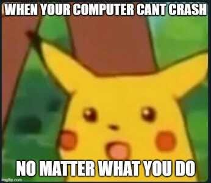Instead of crashing we just stop the application code right before the code that would cause a crash.
This is the whole point of stopping code before the application crashes us.
What does it mean to throw an exception?
If the error is seen ahead of time, the low level code interrupts your application and say "hey stop!" right before potential failure.
This "hey stop!" is known as throwing an exception also known as an interrupt.
Let us run the code, except this part.
The exception is the reason name and the interrupt or throw is the stop.
If you wanted to see at the lowest level code how an exception works, here is an example...
#include <stdio.h>
// Function that "throws" an exception by returning -1 on error
int divide(int numerator, int denominator) {
if (denominator == 0)
// Throw exception: Division by zero
return -1;
// Perform the division
return numerator / denominator;
}
int main() {
int result;
result = divide(10, 0);
if (result != -1)
printf("Result of division: %d\n", result);
else
printf("Error code: Division by zero\n");
return 0;
}
In this C code we are checking ahead of time for a divide by zero.
We return -1 if there is a 0 in the bottom division and we skip the actual divide.
This is what operating system developers and low level coders did to create 1000s of future error cases to skip potentially disastrous code.
Shoulder throw is Public Domain
Your low level applications throw you ahead a few lines or interrupts you before dividing by zero.
If we did not have this check ahead of time who knows what would happen to our computers.
Because we are in the 2020s I am sure the operating system will throw you ahead some lines at an even lower level but yea the program would crash to say the least.
Without the lower level code checking for you, you would have to predict every potential piece of code that would crash your computer.
Then you would have to stop or skip ahead the application before that point.
What types of potential errors are handled?
When you check ahead for potential errors if a potential error is found you throw an exception.
Another word for this is triggering an exception.
Throw and trigger are the same thing but high level coders all use the word throw.
If you use the word trigger they will look at you funny.
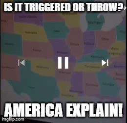High level coders believe triggering an exception means either the programming language or the operating system is erroring out.
They often do not know its to prevent system failure.
They believe throw means you wrote it and trigger means the language or OS developer wrote it.
Tricks on them trigger and throw means the same thing in low level coding because, well, someone had to code it, right?
Someone had to stop the computer from failing by throwing it.
But yea throw, trigger, same thing but high level coders say "triggering an exception" when the exception is built-in the language or OS.
Here are some example error cases those low level coders baked into the language and OS ahead of time for us.
Dividing by zero

Index out of bounds
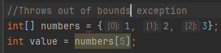File not found
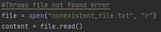Null object
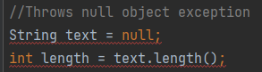Type error
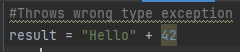Key error
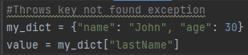Many more...
What is cool, you can make your own error cases and throw exceptions based on your ahead of time code.
We will see how to make our own exception cases later in the article.
For now lets see how to handle these built-in errors the low level coders put in for us.
How to use try catch
In higher level languages we have the built-in ability to throw exceptions with way less code.

Photo by Marco Verch
If we were to do it in C or Assembler we would have to create every case where the error would be, then throw ourselves ahead a few lines manually.
Instead, with higher level programming languages we have built-in ways to do this quicker, easier and with more readability.
We do this with the keywords "throw, try, catch and finally".
The whole point of throw, try, catch, etc. is to save you from writing the future case before an error and write code in less lines.
Let's look at two examples...
Python
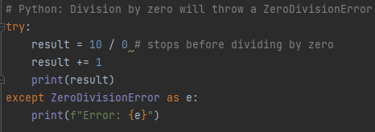Java
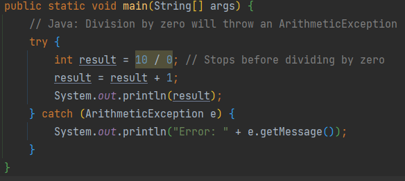In both examples above right before dividing 10 by zero the application interrupts and is thrown into the "except" AKA "catch" portion of the code.
This is exactly like check ahead and skipping however instead of writing the entire future error check yourself it is done by the programming language.
You do not run the division by zero or anything after result = 10 / 0.
It is just thrown ahead.
What is cool is that you can continue running the application.
Take a look:
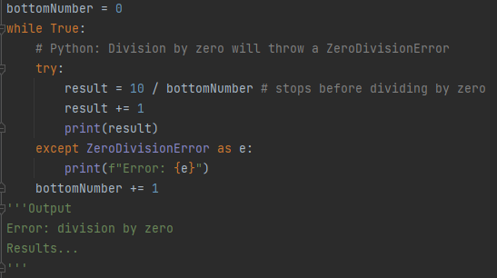By wrapping a while loop around it we will skip bottomNumber being 0, then print future results.
The different phases of an exception
There are three phases of an exception.
The phases use keywords try, catch and finally.
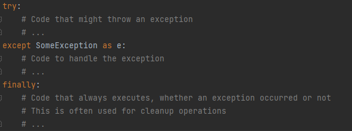Inside the try phase, we are trying code in case of an exception.
If we reach a potential error we go the the catch AKA except phase.
Afterward we always go to a finally stage which is the code after the error.
Often you do not need finally, as the code will just continue running.
But I wanted to show you that because you will see finally in a lot of languages.
You should make a catch for every error case
If you are running a bulk of code with potentially two or three different error types you can catch each one and do something different for each.
Take a look...
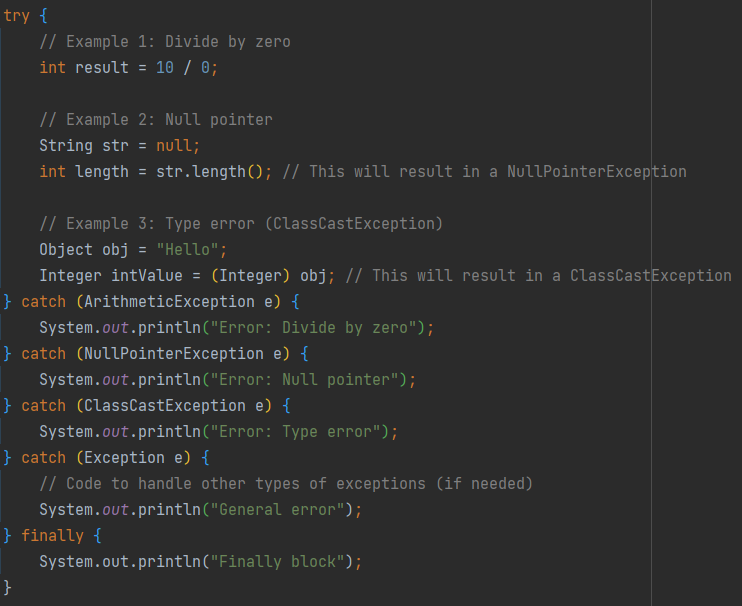Java
Notice we have 3 different errors inside the try block.
We handle each one from top to bottom.
Once an exception is thrown we check errors in the order we wrote them.
This order is arbitrary but once an error is found the application checks all your catch code blocks in this order:
- Divide by zero
- Null pointer
- Type error
- General error
We can choose any order we want but you always want to check the more specific errors first.
If we were to put a general error exception first, the rest would not run.
So if we did this...
- General error
- Divide by zero
- Null pointer
- Type error
Numbers 2-4 would never run.
This is because we are checking a general error first which covers all erorrs.
This leaves no room for future more specific errors and the other catches do not run.
How to throw an exception yourself
What is cool, try catch blocks also check errors deep into inner functions and classes.
It doesn't matter how deep into a stack you go, throw exceptions follow up the stack all the way to main or the top of the application.
It looks for a catch.
Take a look:
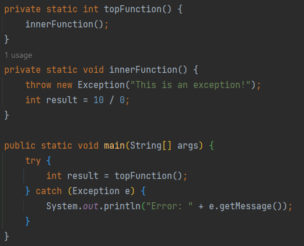Prints "Error: This is an exception!"
Notice I threw an exception in an inner function.
This means I am telling the application, "hey stop!" right before an error.
In this case we are preventing result = 10/0; from happening.
The inner function stops right before the division, goes up the stack and is caught in main.
How do I make my own Exception?
An exception is a class.
Every exception type from DivideByZero to NullPointer is an extension of Exception.
Take a look:
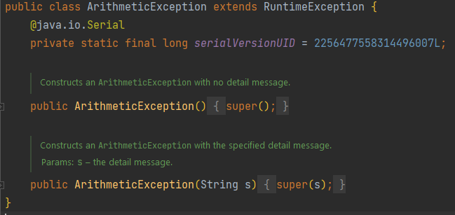DivideByZero is an extension of RuntimeException
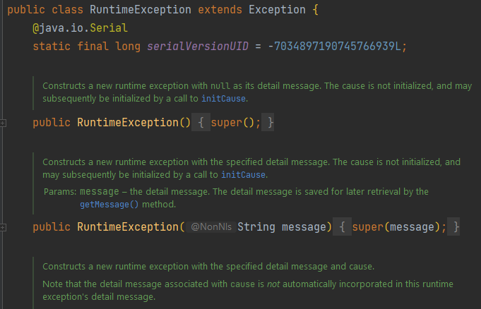RuntimeException is an extension of Exception
So when we need to create our own exception for perhaps our own Python, Java, C++, etc. library we can extend the exception class.
Take a look at a custom made exception in Java:
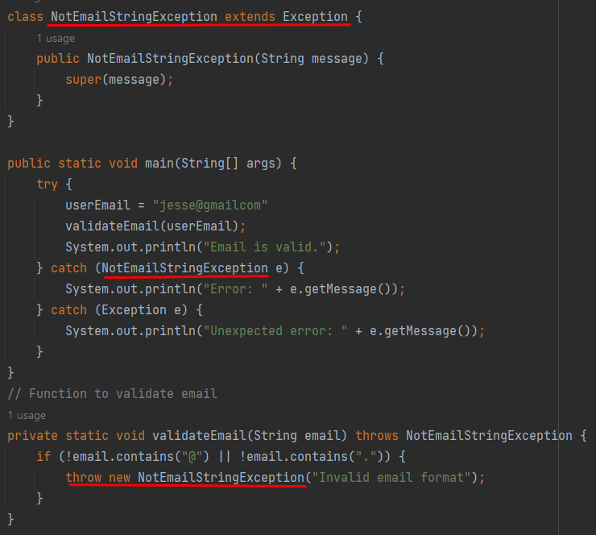In the above we are checking an email is formatted correctly.
We then check if our email is valid.
Then if it is not we throw our custom exception
It is a simple exception which just passes a message "Invalid email format".
This is basic, but you can see how we create our own exception class in a majority of programming languages.
Of course we will always need to check our error case ahead of time before throwing our custom exception.
But, this makes your code abstractions highly intuitive for someone using your code if you were to say make a framework or library.
Where do I use exceptions?
Exceptions are used to make your application robust in specific cases.
A majority of web development, games, mobile apps and tick based editors use a series of exceptions to continue a loop.
Most of these programs have a core loop, like a while loop, that makes your application highly interactive.
Continuing a loop in the case of an error is the most common use case of throwing an exception.
The majority of applications out there are running on a loop, including the website you are on right now and the browser you are running on your phone or computer.
Inside that loop in your application right now there are a bunch of exception cases saving you from a crashing device or program.
These loops can just continue on when a file is not found, a network connection doesn't pan out, a graphics programming render has bad math, there is a security issue and many more exception cases!
Not only this, try catch exceptions are considered best practice for creating programs that don't crash.
So, this is highly useful stuff and it applies to every application.
Use an LLM to add exceptions
Because of how widely documented exceptions are, LLMs are fantastic at creating exception cases for you.
You can copy and paste your code into an LLM and ask it to create a try catch block for you.
The only thing I would say about that, is to minimize how large your try block is.
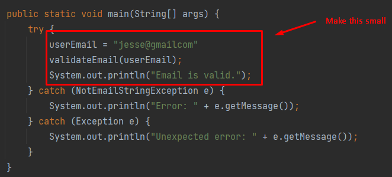Create smaller try blocks.
Making 100 line try blocks is really ugly and makes the code hard to read.
So if you ask an LLM to make a try catch block, just make sure its small enough to be readable.
Anywho, I hope you learned something...
Happy coding!
Resources
How the greatest power of code is abstraction: How the Greatest Power of Code Is Abstraction
Why programming fundamentals are so good: Why Coding Fundamentals Are Important & Questions You Should Be Asking